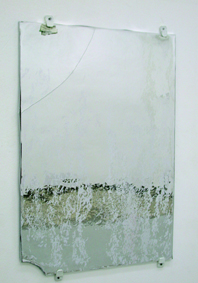

S.Ö.: Burada belki Levent’e sorabilirim. Aura ile biriciklik, orijinal ve tek olma arasında bir ilişki kuruyoruz. Ama bu ilişki sanatta tarihsel olarak nasıl gelişiyor? Yani gelişimi nereden geliyor?
L.Ç.: Benjamin’in metni üzerinden gideceksek, üzerine eklememiz gereken çok metin var. Sonuçta bu kontekst üzerinden mi konuşacağız? Bence bütün bu söylediğinizin kendi işleriniz üzerindeki karşılığından hareket ederek, bir sonuç çıkabilir. İşlerinizin sunumuyla kopya veya aura dediğin şey neyse, ona ilişkin bir şey çıkabilir. Borga, sanırım bu “yapay” dediğin nokta, üzerinde durulması ve konuşulması gereken şeylerden biri.
B.K.: Evet. “Yapay” şu anda birçok sanatçının gündemini oluşturan ve nesnenin tamamıyla yapay olarak alanımıza girdiği sürece işaret eden bir anlatım biçimini karşılıyor. Özellikle yapay kavramını karşılayabilecek sanatçı olarak Thomas Hirschhorn’u örnek verebilirim. Thomas Hirschhorn’un elle ve son derece kaba taklit etme yöntemiyle ürettiği çeşitli yapay mekânlar mevcut. Özellikle büyük havalimanları, tren istasyonları gibi mekânların prototiplerini, taklitlerini üretiyor. Bunları yapay olarak üretiyor.
Yapaylık söz konusu olduğunda kendi uğraştığım şeylerden de söz edebiliriz. Çeşitli yapay nesnelerin –yapay çiçek ya da imitasyon biblo gibi nesnelerin– inandırıcılık boyutuna yaptığım müdahalelerden veya onların, gerçeğinin yerine geçerek hayatımızda çeşitli hikâyelere, öykülere neden olması gibi şeylerden bahsedebiliriz.
S.Ö.: “Yapay” derken birkaç kademe var gibi geliyor bana. Aurası olduğunu varsaydığımız sanat yapıtlarını ben Rönesans’la bağlantılandırdım: imzanın ortaya çıkması, bir bireye ait olması, onun diğer nesnelerden ayrılması söz konusu çünkü. Daha sonraları, 1930’larda, 40’larda, sanat nesnesinin teori bağlamında toplumsal işlevini ortadan kaldırması, onu ayrı bir yere alıyor ve ona gündelik nesnelerde olmayan başka bir şey bahşediyor. Buna da kabaca aura diyoruz galiba. Sanat nesnesinin çoğaltmayla ortadan kalkması daha sonraları söz konusu oldu anladığım kadarıyla. Thomas Hirschhorn örneğinde olduğu gibi, çoğaltmaya uygun, ama bir yandan da güzel olan nesnelerin, ortamların –örneğin uçaklar, havaalanı, kütüphane–, kimi kamusal heykellerin, bir çocuk elinden çıkmış ya da herhangi biri tarafından yapılmış gibi kabaca ortaya konması, bir işlevi olan ve mükemmel diye kabul edilmiş bir nesnenin kabaca taklit edilmesi söz konusu. Eğer konu buysa, kopya nesnenin aurasını ortadan kaldırmıyor, ona bir şey bahşediyor, bir özellik veriyor.
B.K.: Öznellik, biriciklik de denebilir buna aslında, çünkü sanatçının kopyalama işlemini kendi politiği içerisinde aşırı derecede manipüle ettiğini görüyoruz. Yani bir kopya ile nitelendireceğimiz binlerce uçak, onlarca havalimanı ve benzeri kamusal mekânlar var; sanatçı bunlardan yola çıkarak kötü bir el üretimcisi rolünü üstlenerek yapacağı bir taklitle, kendi aurasını barındıran, arızalı, ama kökeninde kopya olan bir şeyden taklit nesne üretiyor.
S.Ö.: Aynı şekilde uçmayan bir uçak fotoğrafını düşün. Onun da işlevi zaten ortada kalkmış oluyor; uçak olmaktan çıkıp uçak fotoğrafına, hatta nesnesine dönüşebilir.
L.Ç.: Peki burada söylediğin aurada, mekanik olarak çoğaltılanın aslını yüceltmesi gibi bir durum da söz konusu oluyor değil mi? Yani bir tür aura kaybına uğrarken aslına da muhteşem bir aura kazandırmıyor mu?
S.Ö.: Evet, belki belli örneklerden gitmek lazım. 
L.Ç.: Burada şöyle bir şey de var. Orijinal yapıt fikri tabii ki söylediğiniz sürece çok bağlı, ama orijinal yapıt fikrinin içerisinde şöyle bir şey de biliyoruz mesela: Rönesans’ta özellikle atölyelerin şöyle bir çalışma yolu tercih ettiklerini biliyoruz: Birtakım özel siparişler tek ve biricik olarak üretilmektedir ve bunların zaten siparişle veya piyasa değeri ile olan ilişkisi belirlenmiştir. Ama aynı atölye şunu da yapmaktadır –bu özel, belli ölçülerde, büyük ölçülerde olabilir– : Belli bir burjuva evine veya saraya gidecek olan yapıtın daha küçük ölçülerde iki veya üç kopyasını da yapmaktadır. Özellikle bu noktada ister istemez şöyle bir şey ortaya çıkıyor: Bu iki, üç kopya aslında bir taraftan aslını yüceltiyor, ama öbür taraftan belki de dolaşımda olmayacak olan şeyi de işaretliyor. Yani mekanik olarak çoğaltılmış olanın sorunu, bütün o imgeyi dolaşıma sokmasıdır. Dolaşan bir şeyin de aslını aslında yüceltmesine rağmen, bir şekilde aslını değersizleştirmesinden de söz edilebilir.
S.Ö.: Avusturya’nın bir köyünde küçük bir müze gezmiştim. Çok enteresan bir yerdi. Müzeyi kuran adam ölmüş, karısı hayattaydı, doksan yaşında, ayakta zor duruyordu. Bu müze randevu ile geziliyor, içinde tipik müze fikrini canlandıran bir sürü şey var. Mesela Napolyon’un çay fincanı... artık her yerde, Avusturya’da da, burada da bulabildiğimiz bir şey. Mesela, Osmanlı nargilesi... böyle enteresan olabilecek şeyler. Bir yandan da duvarlarda resimler var: Mesela, “Bakın” diyor müzeyi gezdirirken, bu Géricault’nun bilmem ne eserinin kopyası, bilmem kim tarafından yapılmış. “Üstelik sanatçı kendi eliyle yapmış” diyor. Kopya olan bir sürü şeyi gururla duvarlara asmışlar.
B.K.: Böyle bir hayranlık özellikle Amerika’da zaten 1970’li yıllardan beri söz konusu. Umberto Eco’nun çeşitli kitaplarında da dile getirdiği özel kentler tasarlanmış Amerika’da. Bu kentlerde tamamıyla replikalar üzerine kurulu çeşitli dünyalar var – Hollywood filmlerinin setleri, Beyaz Saray’ın birebir üretilmiş taklidi, legoland biçiminde üretilmiş Hollywood yazısı, Amerikalı büyük liderlerin büyük anıtları. Bunların tamamıyla yapaylarına dair yaşantı alanı kurulmuş. Ve bu alan içerisinde izleyiciler, onların yapay olduklarını bilerek, yapayın büyüsüne inanarak, dolaşıyorlar. Böyle bir kültür empozesi de söz konusu. Özellikle günümüzde bu kabul edilebilir bir seviyeye çekilmiş durumda. Bunun nedenini de sorgulamadan, fazlasıyla kabul eder bir şekilde davranan bir yapı hâkim aslında.
L.Ç.: Yine de şöyle bir fark var aslında Serkan’nın söylediğiyle bunun arasında. Sen yapay olarak, belki de peşinen programlanmış bir şeyden söz ediyorsun.
S.Ö.: Kopya.
B.K.: Taklit.
L.Ç.: Ne fark var sizce arada?
S.Ö.: Hiçbir fark yok. Hangisi doğru, sen önce onu söyle?
L.Ç.: Ben sadece ikisi de cevap olabilir diye düşünüyorum. Ama siz söyleyin, ben söyleyeyim fikrimi. Çok basit değil: kopya, taklit. Tekrar kopya, tekrar taklit! [Gülüşmeler] Şöyle bir şey mi düşünüyoruz? Önemli olan bir yapıtı el işçiliğiyle taklit etmek mi diyoruz? Yoksa üretilen şeyin kapital olarak değerinin düşüklüğünden mi söz ediyoruz? Üretilen şeyin zaten bile bile yapay bir şey olduğunu kabul etmekten mi söz ediyoruz? Bunların hepsi muhtemelen bu eylemin içerisinde. Bu durumda yapılan şey, aslında yapan kişiye de bağlı. Yani taklidin bile kaç kopya olduğu, ister istemez bu tartışmayı başka bir zemine sokar. Yani kopya edilen şey o kadar değerlidir ki –onu birebir olarak kopya eden kişi de çok önemli bir sanatçıysa– ortaya çıkacak olan şey bile çok ciddi bir kopya olabilir. Olmaz mı?
S.Ö.: Olabilir. Ama bence...
L.Ç.: Mesela sen üretimlerinde kopyayı bir şekilde kullanıyorsun. Bu durumda senin üretimin, esas kopya, hedeflediğin şeyin değeri ile aynı mı, yoksa daha mı değersiz?
S.Ö.: Daha değerli.
L.Ç.: Nedir bu değer o zaman?
S.Ö.: Bu değer, tecrübedeki değer bence. Zaten orijinal olan tecrübedir. Başka bir nesne, bir resim, orijinal olan şey. Orijinal olan senin onunla yaşadığın tecrübe. Bu tecrübeyi tetikleyen şeyler de bu yaşantının çevresindeki anlatı, yani diskur, bana sorarsan. Madem kopya diyoruz, Radikal ile yaptığımız işten bahsedeyim.
L.Ç.: Bir şey sorayım mı? Benjamin’in bu sözü edilen metnini birebir olarak kopyalamayı düşündün mü hiç?
S.Ö.: Hiç düşünmedim.
L.Ç.: Peki, Radikal’e gelelim.
S.Ö.: Şimdi orada ne vardı? Her gün yayınlanan bir gazete var: Hayatı takip ediyor ve dağıtılıyor, bütün ülkeye. Tarihi tefrika ediyor bir anlamda. Benim yaptığım şey; bu tecrübeden yola çıkarak bir günlüğüne bunu değiştirmekti: Bir günlüğüne onun kopyasını yapmak ve bu kopyanın gazetenin yerine geçmesini sağlamak. Oradaki o oyun aslında, benim demin biraz abartarak “kopya daha değerli kılıyor” dememe yol açtı. Çünkü bir dolu sanatçı, bilgisayardan çıkmış veyahut da sorgulamadan aldığımız bir dolu nesneyi, resmi, şunu bunu kopya ediyorlar elle. Böyle yapan birçok sanatçı var. Anlattığın gibi, Thomas Hirschhorn burada bir uç örnek, çünkü kargacık burgacık yapıyor. Ama kimi belgeleri, resimleri çok ustalıklı bir şekilde kopya eden sanatçılar da var. Kopya olduklarını ilk bakışta anlamıyorsun, sonra “vay be nasıl yapmış?” diyorsun. Yazılı belgeleri kopyalayanlar da var. Bilgisayardan çıkmış, grafik dizaynı yapılmış şeyleri de elle kopyalayanlar var. Örneğin Borga Kantürk. İlk başta tam anlamıyorsun, sonra yakından bakınca “vay be nasıl yapmış” diyorsun.